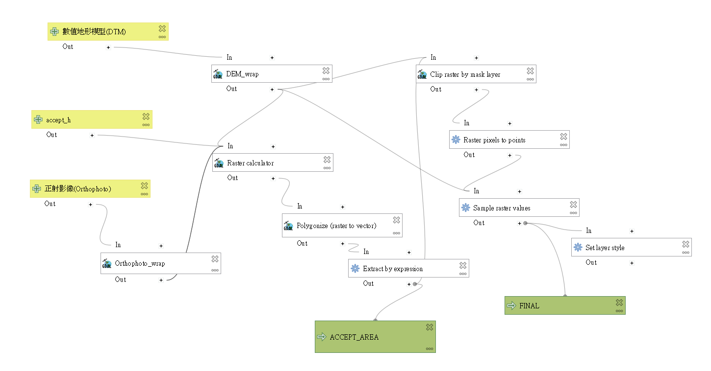
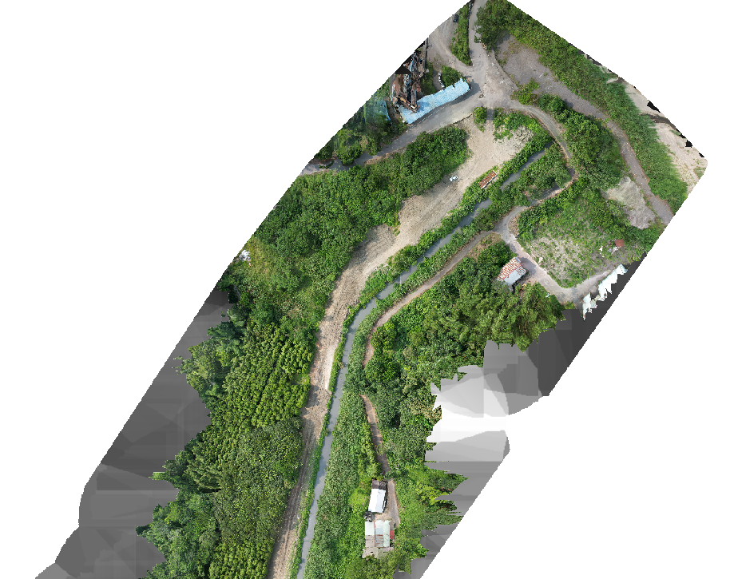
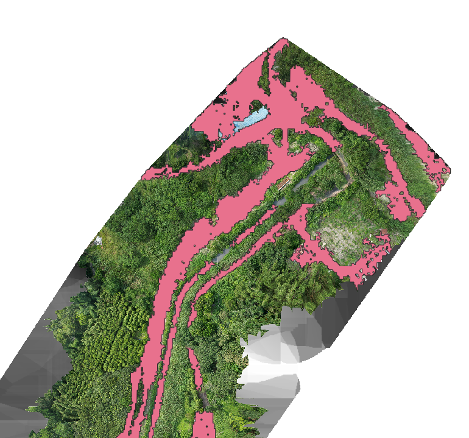
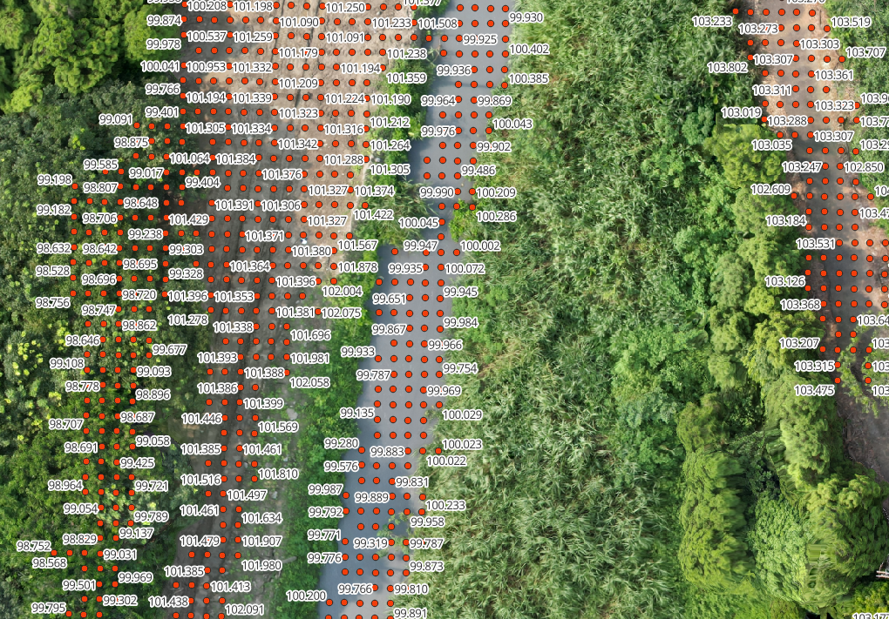

QGIS高程濾除工作流
前言
經空拍機搭配GCP測量回來的數值地形模型即便在WebODM中可以勾選是否要設定為DTM演算法，但實際上根據QGIS上面所呈現不完全是如此，有些樹木或草叢還是會被誤判成DSM，畢竟這是空拍攝影本身的限制，除非用光達來掃，不然往往都會有異常高程出現，如何正確的排除便是一件相當耗時耗力的工作。
根據空拍攝影高程識別，計算成果通常比較信任非植栽的裸露區(比如:泥土、人行道、柏油路、混凝土構造物...等等)，然而當測量範圍相當龐大時，用以往框選的方式去找出非植栽區域相當麻煩，故本篇文章便是探討是否能利用正射影像的RGB三原色及數值地形模型進行高程可信度範圍判別。

原理
正射影像
在正射影像的像素格中會帶有RGB三種顏色，超綠係數則是透過Rater Calculator將綠色部分X2後扣除紅色與藍色，根據經驗所得到的ExG大於20以及ExG小於225的部分可以當作是綠色植物的部分，詳細的ExG分界要取多大，可以與正射影像套疊後評估。
數值地形模型
WebODM本身的DTM演算法在邊界上他會取得鄰近的低點位置作為該點的高程值，此時的高程就是屬於正確高程，但是在正射影像上看起來卻是綠色，這時就會被排除，至於合理高程值應為多少，假設堤岸高程為EL+100，我就會抓100以下當作是合理的。
經套疊正射影像後發現，原始DTM會比正射影像來的大，在影像邊界外的部分也容易出現異常高程，此時也需要進行排除處理，可以透過判釋網格是否具備紅光(R)的數值作為依據，畢竟要有光才有像。
綜上兩項內容，我們可以透過幾項條件的設定來取得信任度較高的範圍。 * R>0 * ExG<20 或 ExG>225 * DTM<100
模型

案例
此為灌溉渠道的設計案前期空拍測量成果，裸露區為土方堆置區域，經空拍內業搭配GCP演算後的高程為可信任範圍，流向為東北到西南，順流向右側為植栽密集區域且地勢較為低漥(EL<100)，左側為流水面高程容易跟被判斷為裸露地陰影，後續可以挖除後套疊RTK現場實測成果進行修整，請參考QGIS航拍地形模型整理



結語
空拍機飛完的點資料勢必會有不合理的高程點，透過正射影像與DTM合理高程範圍內的組合技使用，可以將之前人工框選範圍進行點取樣的過程精簡，即便是人工框選也可能會有判釋錯誤的情形發生，這時候又還要進入點編輯模式逐個檢查，相當耗費精神，人工刪除點資料可參考
透過QGIS本身所提供的模型建置器(Model Designer)不僅可以將繁雜的步驟標準化確保每次的生成都是差不多的品質，同時又具備一鍵完成的高效作業，提升大眾使用的意願，進而吸引更多人願意接觸QGIS在生成高程的工作流，或許在接觸過程中也會發現更多有趣的應用。
⭐ 有需要這個工作流的模型建置方法再透過左側聯絡資訊聯繫我吧!
踩坑紀錄
一、網格跟向量
起初在摸索範圍框選時，一直停留在我要先把範圍框出來後轉成向量，然後再用向量來做合併、切割，因為範圍算出來容易出現幾何不連續的情況，雖然QGIS本身有提供工具可以進行幾何修復，不過還是很容易卡在一些面積太小，8字型幾何等等特殊情形，最後的模型建置就會相當繁瑣，不好用。
網格就是網格，網格們只要像素相同，他們就可以彼此之間去做演算，就像是前面所提到的條件設定，有時候還是不要想太多。
二、計算速度
對於一般應用而言，空拍攝影經內業演算後成果往往都是cm級別的，這對於QGIS的演算過程來說負荷太大，容易算到一半就停工噴錯誤訊息，與此同時每次的演算都會有暫存檔，對我的256GB硬碟來說很容易滿，然後也會停工，雖然後來我把暫存檔移到D槽存放了，不過他還是每次的測試都算很久，後來我才意識到我根本不需要cm級別的像素計算，即便是每1平方公尺給我一個點資料都已經很精準了(透過Reproject)。
速度提升不上來對於很多LAG後遺症的人很容易在測試過程中就突然牙起來，所以有時候精度與速度還是要有所取捨，對我來說，我是設定50cm的精度其實就夠用了。